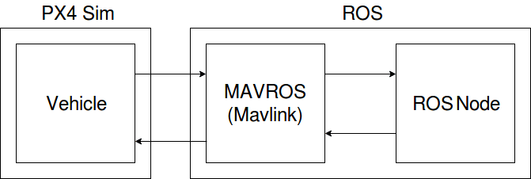

PX4 SITLシミュレーション¶
PX4とは¶
PX4はドローンのフライトコントローラやファームウェアを開発しているオープンソースプロジェクトです。
環境構築¶
以下の内容は Development Environment on Linux - PX4 Developer Guide を参考にしています。 問題が起きた場合は最新版を確認するようにしてください。
事前準備¶
シリアルデバイスとの通信を行えるようにするためには、ユーザを dialout グループのメンバーにする必要があります。
ユーザを dialout のメンバーにするには以下のコマンドを実行します。
sudo usermod -a -G dialout $USER
コマンドを実行したら、設定を有効にするために一旦ログアウトしてから再度ログインします。
インストール¶
シミュレーション環境はスクリプトを使うことで簡単に構築できます。 はじめに、 ubuntu_sim_ros_gazebo.sh をダウンロードします。
ダウンロードしたままの状態だとリポジトリキーが違っていてROSパッケージをインストールできないので、 ubuntu_sim_ros_gazebo.sh の以下の部分を変更します。
sudo apt-key adv --keyserver hkp://ha.pool.sks-keyservers.net:80 --recv-key 421C365BD9FF1F717815A3895523BAEEB01FA116
以下が正しいリポジトリキーを設定するコマンドです。
sudo apt-key adv --keyserver 'hkp://ha.pool.sks-keyservers.net:80' --recv-key C1CF6E31E6BADE8868B172B4F42ED6FBAB17C654
ubuntu_sim_ros_gazebo.sh のあるディレクトリで以下のコマンドを実行します。
source ubuntu_sim_ros_gazebo.sh
コマンドを実行すれば自動でインストールされます。 ROSがインストールされていない場合は、ROSもインストールされるのでしばらく時間がかかります。
デフォルトのGazeboのバージョンは7.4よりも下なので、 Install Gazebo using Ubuntu packages を参考にしてGazeboのインストールを行います。 初めにインストールされているGazeboをアンインストールします。
sudo apt purge gazebo* libgazebo*
次に packages.osrfoundation.org からパッケージをインストールできるように設定します。
sudo sh -c 'echo "deb http://packages.osrfoundation.org/gazebo/ubuntu-stable `lsb_release -cs` main" > /etc/apt/sources.list.d/gazebo-stable.list'
次にリポジトリの鍵の設定を行います。
wget https://packages.osrfoundation.org/gazebo.key -O - | sudo apt-key add -
最後にGazebo7をインストールします。
sudo apt update
sudo apt install gazebo7
sudo apt install libgazebo7-dev
スクリプトの実行が終了したら、PX4のファームウェアが ~/src/Firmware 以下に作成されています。
Gazeboシミュレーション¶
Gazeboを使ってシミュレーションを行うには、 ~/src/Firmware 以下で次のコマンドを実行します。
make posix_sitl_default gazebo
初回実行の場合はしばらく時間がかかります。 ビルドが終わったらシミュレーションが起動し、以下のような画面が表示されます。 （ドローンは赤枠内）

他にも様々な機体のシミュレーションを行うことができます。 興味があれば シミュレーションで使える機体一覧 を参考にしてください。
シミュレータのターミナル内で以下のコマンドを実行すれば機体を離陸させることができます。
commander takeoff

他にもコマンドがあるので試してみるとよいでしょう。
help コマンドを実行すれば実行可能なコマンドの一覧を表示できます。
ROSを使ってGazeboシミュレーションを行う¶
mavros¶
ROSノードからシミュレータ内の機体に命令を送ったり、データを受信したりするには、mavros というROSパッケージを使います。
機体は Mavlink というプロトコルに従って通信をしており、以下のようにmavros（MavlinkのROSラッパー）を経由してROSノードとの情報のやり取りをします。 センサ情報や速度指令などはトピックを通じてやりとりでき、他にも離着陸用のサービスが用意されています。 利用可能なサービスやトピックの一覧は ここ にあります。
mavrosを使って機体と通信する¶
実際にmavrosを使って機体と通信してみましょう。 シミュレータの起動は Gazeboシミュレーション で説明したとおりです。
シミュレータを起動したら、以下のコマンドでmavrosを起動します。 fcu_urlパラメータについては、 補足: mavrosのfcu_url引数について で解説しています。
roslaunch mavros px4.launch fcu_url:="udp://:14540@127.0.0.1:14557"
起動できたら別のターミナル内で、
rostopic list
を実行してみましょう。 /mavros/... のようなトピックが現れていれば通信が出来ています。
試しにサービスを使ってみましょう。
/mavros/cmd/arming サービスに対して、メッセージ"value: true"を送信することでドローンのモータを起動することができます。
rosservice call /mavros/cmd/arming "value: true"
他にも離陸用のサービスなどがあるので試してみると良いでしょう。
/mavros まで入力してタブを2回入力すると使えるサービスの一覧が表示されます。
この機能はタブ補完といい、ROSコマンドだけでなく、Ubuntuのターミナル上でも使えます。（ cd コマンドで移動するときなど）
便利なので覚えておくといいかもしれません。
また、サービス名を入力し終わったあとにタブ補完を使うと必要なメッセージが自動で入力されます。 メッセージのそれぞれの値はデフォルト値が入力されているので必要な値に変えましょう。 上記のコマンドでモータを起動したあとに以下のコマンドを実行すればドローンを5m上空へ離陸させることができます。
rosservice call /mavros/cmd/takeoff "{min_pitch: 0.0, yaw: 0.0, latitude: 47.3977506, longitude: 8.5456074, altitude: 5}"

latitude、longitude、altitudeはそれぞれ緯度、経度、高度のことで、ホームポジション（初期位置）ではそれぞれ、47.3977506、8.5456074、0です。 このコマンドでは、緯度47.3977506、経度8.5456074、高度5へ離陸しろ、というリクエストを送信することで指定の位置に離陸させています。
シミュレータのROSラッパーを使う¶
PX4 SITLシミュレータは roslaunch コマンドを使って起動することもできます。
以下のlaunchファイルを使ってシミュレータを起動できます。
- posix_sitl.launch
SITLシミュレーション環境を起動する
- mavros_posix_sitl.launch
SITLとmavrosを起動する
この場合は次のようにシミュレータ、mavros、ROSノードが通信しています。

事前準備¶
これらのlaunchファイルからシミュレータを起動するには、ROSの環境変数の設定が必要です。
はじめに ~/src/Firmware ディレクトリに移動します。
cd ~/src/Firmware
Gazeboシミュレーション の内容を実行していない場合は次のコマンドを実行してください。
これによってシミュレーションに必要なファイルが作成されます。
以下のコマンドはすべて ~/src/Firmware ディレクトリで実行する必要があります。
make posix_sitl_default gazebo
次に、必要な設定スクリプトを実行します。 ROSの設定ができている場合は一行目は実行しなくても構いません。
source ~/catkin_ws/devel/setup.bash
source Tools/setup_gazebo.bash $(pwd) $(pwd)/build/posix_sitl_default
次に、環境変数を設定します。
export ROS_PACKAGE_PATH=$ROS_PACKAGE_PATH:$(pwd)
export ROS_PACKAGE_PATH=$ROS_PACKAGE_PATH:$(pwd)/Tools/sitl_gazebo
これらのコマンドは毎回実行しなければなりません。
面倒な場合は ~/.bashrc に以下の内容を書き込んでおくと、毎回この内容が設定されます。
source $HOME/src/Firmware/Tools/setup_gazebo.bash $HOME/src/Firmware $HOME/src/Firmware/build/posix_sitl_default > /dev/null
export ROS_PACKAGE_PATH=$ROS_PACKAGE_PATH:$HOME/src/Firmware
export ROS_PACKAGE_PATH=$ROS_PACKAGE_PATH:$HOME/src/Firmware/Tools/sitl_gazebo
シミュレータを起動する¶
以下のコマンドを実行すればシミュレータが起動します。
roslaunch px4 posix_sitl.launch
mavrosも同時に起動したい場合には mavros_posix_sitl.launch を使います。
roslaunch px4 mavros_posix_sitl.launch
また、以下のようにすれば Gazebo Simulation - PX4 Developer Guide にリストアップされている機体を使用することもできます。
roslaunch px4 mavros_posix_sitl.launch vehicle:=vehicle_name
補足: mavrosのfcu_url引数について¶
roslaunchコマンドの説明¶
ROSでは、以下の形式を使うことでlaunchファイル内の変数に値を設定することができます。
roslaunch package file.launch arg:=value
px4.launch ファイルの内容は以下のようになっており、 roslaunch mavros px4.launch fcu_url:="udp://:14540@127.0.0.1:14557" とすることで fcu_url 引数の内容を変更することができます。
<launch>
<!-- vim: set ft=xml noet : -->
<!-- example launch script for PX4 based FCU's -->
<arg name="fcu_url" default="/dev/ttyACM0:57600" />
<arg name="gcs_url" default="" />
<arg name="tgt_system" default="1" />
<arg name="tgt_component" default="1" />
<arg name="log_output" default="screen" />
<arg name="fcu_protocol" default="v2.0" />
<arg name="respawn_mavros" default="false" />
<include file="$(find mavros)/launch/node.launch">
<arg name="pluginlists_yaml" value="$(find mavros)/launch/px4_pluginlists.yaml" />
<arg name="config_yaml" value="$(find mavros)/launch/px4_config.yaml" />
<arg name="fcu_url" value="$(arg fcu_url)" />
<arg name="gcs_url" value="$(arg gcs_url)" />
<arg name="tgt_system" value="$(arg tgt_system)" />
<arg name="tgt_component" value="$(arg tgt_component)" />
<arg name="log_output" value="$(arg log_output)" />
<arg name="fcu_protocol" value="$(arg fcu_protocol)" />
<arg name="respawn_mavros" default="$(arg respawn_mavros)" />
</include>
</launch>
fcu_urlについて¶
fcu_url はフライトコントローラ（FCU）のアドレスです。
シリアル（USBなど）で接続している場合は /dev/ttyACM0 （環境によって異なる）にFCUが接続されているので、これを指定します。
コロンの後ろの数字はボーレート（baudrate）です。
シミュレーションの場合はUDPを使って通信します。 UDPを使って通信する場合は次のような形式に従ってfcu_urlを指定します。
udp://[bind_host][:port]@[remote_host][:port]
bind_hostはFCUのIPアドレスを指定します。デフォルトではINADDR_ANY(0.0.0.0)となっており、mavrosはすべてのIPアドレスからのデータを受信します。portはROS側の待受ポートで、デフォルトでは14540です。remote_hostはリモートのPCのIPアドレスです。シミュレーションの場合はlocalhostもしくは127.0.0.1を指定します。次にある
portはFCU側の待受ポート（14557）を指定します。
それぞれの部分に数値を当てはめると fcu_url は次のようになります。
udp://:14540@127.0.0.1:14557
ポートの設定については ROS with Gazebo Simulation - PX4 Developer Guide を、 fcu_url の詳細については mavros - ROS Wiki を参考にしてください。
参考¶
- PX4 Developer Guide
PX4開発者Wiki。基本的な内容はここにあります
- Development Environment on Linux - PX4 Developer Guide
Linux向けPX4ファームウェアインストールガイド
- Gazebo Simulation - PX4 Developer Guide
Gazeboを使ってシミュレーションを行う
- ROS with Gazebo Simulation
ROSとGazeboを使ってシミュレーションを行う
- Linuxシステムの仕組みと運用、管理
シリアル端末について
- Understanding ROS Services and Parameters
ROSサービスについて